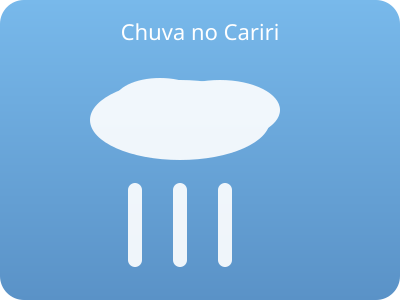

Alerta de chuvas intensas para o sul do Ceará neste fim de semana
Defesa civil alerta para acumulados significativos. População deve evitar áreas de risco e acompanhar os boletins oficiais.
Ler matéria completa
Defesa civil alerta para acumulados significativos. População deve evitar áreas de risco e acompanhar os boletins oficiais.
Ler matéria completa
O empreendedorismo local ganha força no primeiro trimestre de 2026, impulsionado por novas linhas de crédito e digitalização.
Ler matéria completa